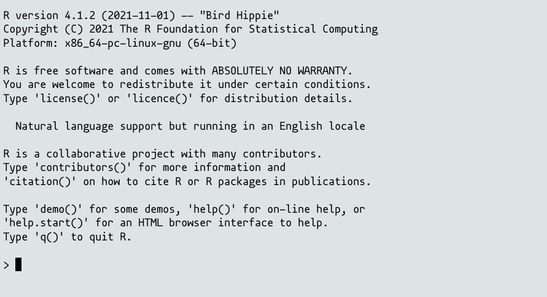

2 What is R?
- Script Language
- Version 1.0 from 2000 (idea date back to the 1974)
- Aim: Statistical Analysis
- Designed for data analysis and “interactive” use
- Download: r-project.org

r-project.org
2.1 How does R look like?

What you see when you start R
2.1.1 R Code
data <- c(12, 45, 65, 1, 3, 87)
mean(data)
data <- data + 5
sort(data)2.1.2 R Code with Results
data <- c(12, 45, 65, 1, 3, 87)
mean(data)## [1] 35.5data <- data + 5
sort(data)## [1] 6 8 17 50 70 922.2 Why R?
- Easy to get into (although it might not feel that way at first)
- Designed for solving scientific problems
- Big community - Getting help is really easy.
- Open-source, active development
The R package structure has been the key addition to the software (Chambers 2020)
- Expandable with
packagesprovided by other R users- Specialized analysis for specific fields
- Machine Learning
- Medicine
- Writing Books
- …
- Used in science, industry, healthcare, NGOs, …
2.3 Rstudio
- Integrated Development Environment (IDE)
- Makes R “convenient” to use
- Text Editor + R Console
- Project Environments, Package Management, Help Pages, Plot Viewer, File Browser …